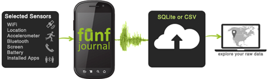
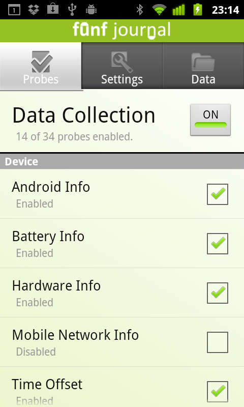
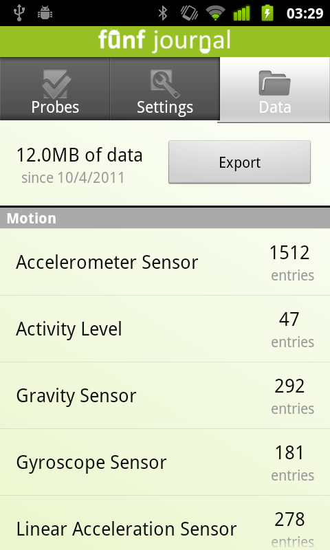

Getting Started With Funf
Funf Journal is an Android application built using the Funf framework, which makes use of many of its built-in features. It can be used by researchers, self-trackers, or anyone interested in collecting and exploring information related to the mobile device, its environment, and its user's behavior. Funf Journal is probably the easiest way to get started with the Funf framework and its functionality.
If you are a developer who wants to get started with using Funf as a library in your own projects, extend Funf's functionalities, or if you would just like to go under the hood of Funf's internals, you probably want to go to the "Developers" area and the Funf project page on Google Code.
Funf Journal App
Funf Journal allows the user or researcher to configure data collection parameters for over 30 different built-in data probes, including all phone sensors, as well as additional data types and high-level probes that generate inferences and new data based on the output of sensor data. New probes are continuously added to the system. The app supports importing and exporting of probing configurations, as well as remote configuration (with user permission).
Based on the configuration, the probe data is automatically collected as the phone is used in everyday life. The data is securely stored on the phone in an encrypted format (you will be asked to select the encryption password when the app is first launched).
The data can be extracted from the phone in one of several ways - by manually exporting it via email or any other Android service that supports file transfer, by manually copying it out of the device's memory card, or by setting up a server and configuring Funf to automatically upload the data to it - and if Internet access is not available, the app will accumulate data on the device's memory card and wait until it is back online. When a server link is set up, the data collection configuration could also be performed remotely - the app will check the server for new configuration instructions for download.
Once the data is extracted from the phone, we provide a set of desktop utilities that allow decryption of the data, demonstrate some examples of visualizing and looking into the collected data, and also produce a clean database (in SQLite format) that you can use for further analyzing and exploring your data as well as for importing data into other applications or services.

IMPORTANT NOTE: All of the collected data is in your domain - your phone, and wherever you might choose to export your data to. You alone have access to it and decide what is done with it. We have no access to any of the data.
Using Funf Journal
- Installing Funf Journal
- Configuring Data Collection
- Data Storage and Extraction
- Backend: Exploring Your Data
- Advanced Topic: Setting Up the Server Link

Collecting Data
Probes collect data from the mobile device and store it so that it is easy to access later. The Probes tab lets you quickly see the current state of all probes on the system and quickly turn them on and off at the push of a button. Stop all probes from scanning by unchecking the checkmark at the top right of the screen. When you enable probes again, they will resume with the same configuration they had before.
You can also manually start a probe at any time. Click and hold any probe to immediately run it once. Even if the probe is not enabled you should see data appear in the data tab soon after. This gives you a chance to manual record data without having to enable automatic scanning in the background.
Configuring Sensors
Tap Settings to see details about which sensors are currently enabled, and how often they are scanning. Tap any sensor to configure it. Funf has over 30 sensors builtin, including:
- Wifi - Takes a snapshot of the Wifi hotspots available
- Location - Uses cell and Wifi networks along with GPS to computer current location
- Activity - Uses the accelerometer to estimate how active you are
- Bluetooth - A snapshot of nearby bluetooth devices
- Screen - Records when the screen is turned on and off
- Battery - Records the current state of the battery
- Installed Apps - A snapshot of the apps that are installed
- Running Apps - A snapshot of the apps that are currently running
- and many more...
The period setting is the scheduled time between scans, and the duration setting is the length of time the probe will run to gather data. Some sensors passively detect all events and will not give you the option to configure their scanning frequency. When done configuring, simply press your back button to the settings tab. Your settings are automatically saved.

Monitoring and Exporting Data
The Data tab gives you an overview of the data that has been collected so far in your app. At the top is the total disk space your data is taking up, as well as how far back the data goes. Below is a list of the number of journal data entries each probe has made.
Exporting the data is simple. Tap the export button to create a zip file of all existing sqlite database files to be sent as an attachment. Choose how you want to send the zip file to get it to your computer, such as email, bluetooth, or Dropbox.
You also always have the option of accessing the files directly on the SD card. The “.sql” files are located in the “edu.mit.media.funf.journal” folder on the SD card.
If you no longer want the collected data stored on your Android device, open the options menu and select “Delete Data”. Confirm by tapping “Delete” and all existing sensor data will be deleted from your device. Make sure to also disable the Funf Journal on the Probes tab, or new data will continue to be collected.
Analyze data
The data visualization scripts are provided to give you a sample snapshot of a limited amount of your data. The data, itself, is converted to a convenient single SQLite file, allowing you to explore your data separately.
First, download the appropriate version of the script for your OS, from the downloads page. After unzipping the contents, place the exported zip file from the previous section in the same folder.
Double click funf_analyze to run the program and type the password you used to encrypt your data when requested. It is possible to use multiple passwords across the same data. The script will prompt you to input addition passwords if it is unable to decrypt all. Hitting enter with no password will skip remaining encrypted files. Once done, open data_visualization.html to view a snapshot of your data.
For exploring all data from all your enabled probes: http://sourceforge.net/projects/sqlitebrowser/